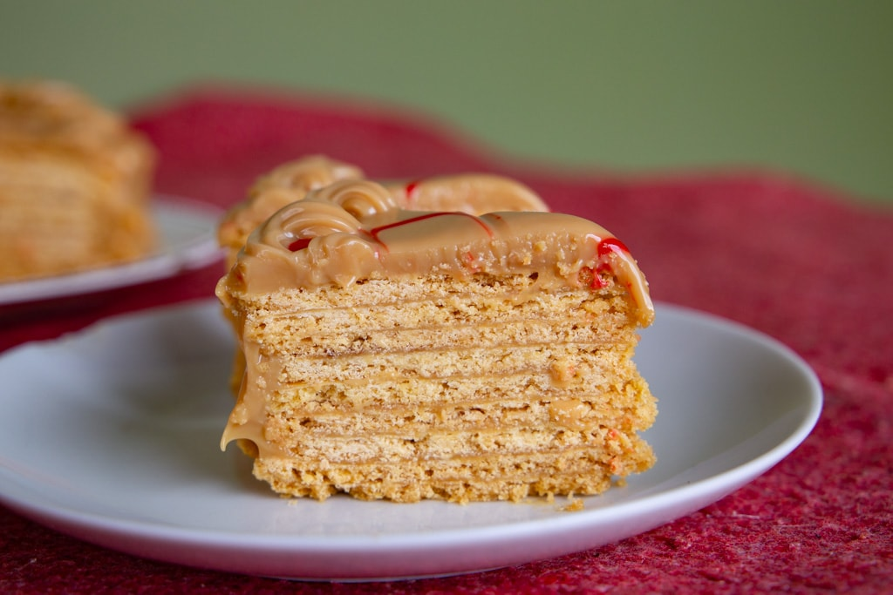

Torta Chilena

Directions
-
Cake Layers: Mix flour, sugar, butter, eggs, milk, baking powder, and
vanilla. Bake in two pans at 350°F, then let cool.
-
Assembly with Dulce de Leche: Layer cakes with generous spreads of
dulce de leche between them.
-
Chocolate Ganache: Heat cream, add chopped chocolate, stir until
smooth. Pour over the layered cake and let it set before serving.
- Enjoy!
Back to main page